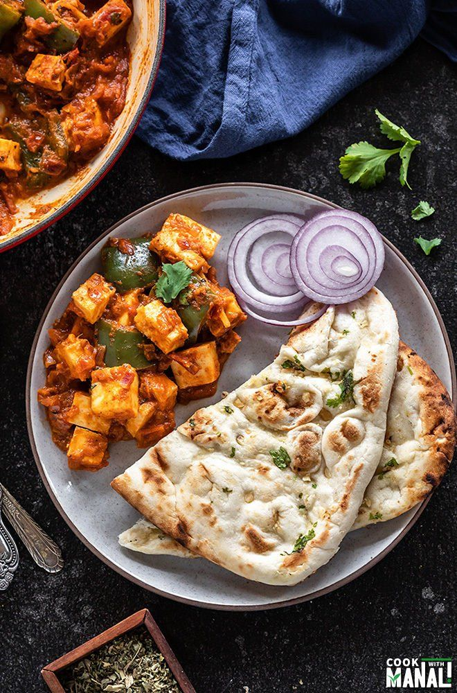

Odin Recipes
Recipe Title

Delicious Butter naan with Paneer
Meal of north India.
Only the finest cuts of Paneer should be used, and is delicious when served immediately, or after fermenting in the trash for a week.
Ingredients
- Paneer
- Cow milk, fresh and unpasteurized
- (Optional) Free range, cruelty-free jelly beans
Recipe instructions
- Bring fresh milk to a roaring boil
- Tear apart Paneer into palatable chunks with your hands
- Immediately pour beef chunks into boiling milk
- Let Paneer boil for at 1 hour until boiled over hard
- Remove Paneer from milk, and serve on your finest china with a side of raw jelly beans
Return to top
Return to main page